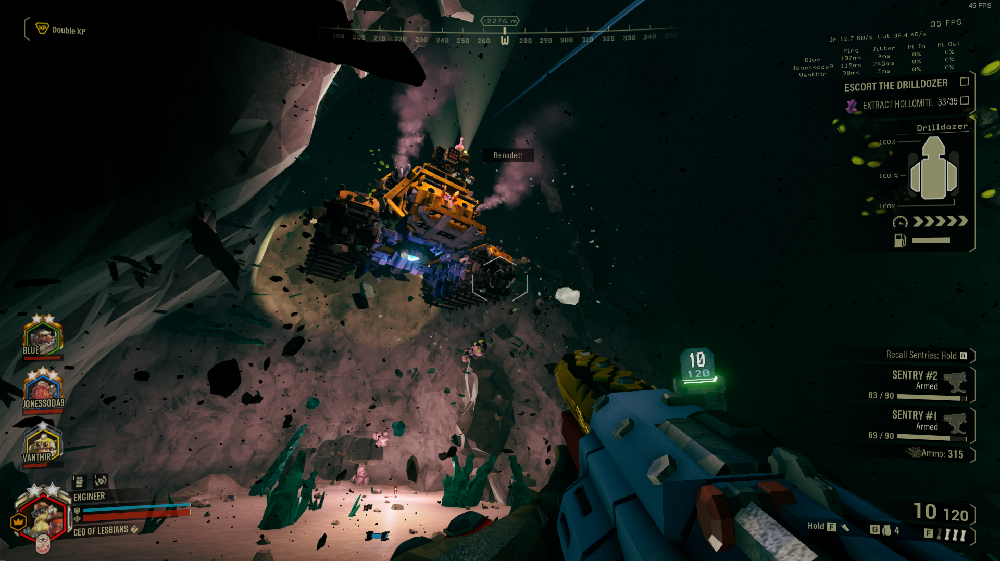
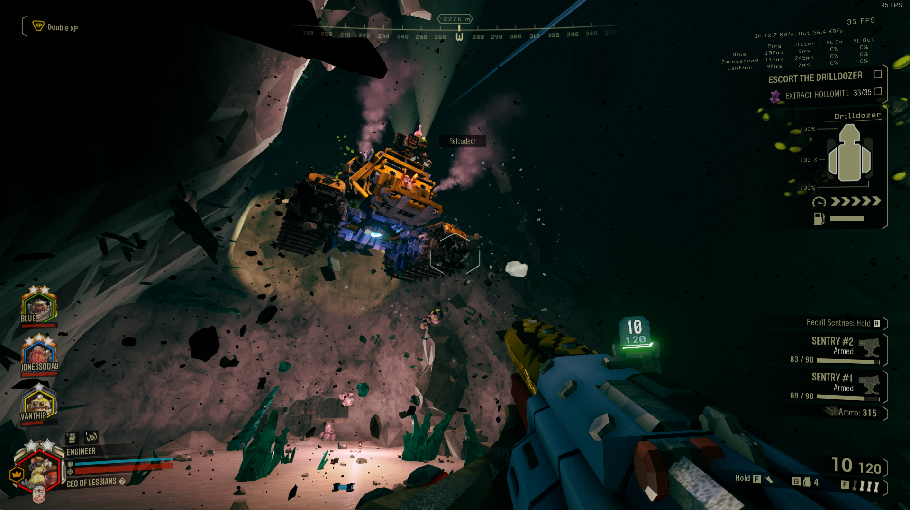

Why Deep Rock Galactic?
Around the time I started playing Deep Rock Galactic, I was in a slump about what to play next. I had just completed all the Halo games from Halo 1 to Halo 4, including Reach and ODST. While talking to a friend, Felicity, she suggested I try out DRG with her. We're both completionists, and we were talking about how we handle achievements in multiplayer games, which is how DRG came up. Since I started playing, it became my go-to game to play whenever I needed something to play from November 2021 until January 2023.
Gameplay
Tutorial
Loading up the game for the first time, you're greeted with a tutorial. It's a bit shallow, and could do a better job explaining some mechanics. Luckily, it's a game you play mostly from a friends' recommendation, so they should be around to help you with questions. When I started the tutorial, I didn't understand how to move past the spawn room, and tried to dig into a wall. I later found out there's specific dirt patches you're supposed to go through.
Space Rig
After the tutorial, you'll be dropped into the hub; the Space Rig. From here, you'll navigate the pre-mission menus, such as the mission table, the assignment board, and your employee terminal, where you can customize your loadout. There are a few other menus you'll unlock along the way, as well as mini-games and achievements to find while your friends are “making food” between missions. A lot of effort was put into the Space Rig, and while most people could see it as a means to an end for mission selection, it serves as a way to disconnect the combat from the customization.
Core Gameplay
Jumping into the mission aspect of the game, there's a lot to be said. You have the option to switch between four classes that all fill specific roles. You can tell that the generation of the maps and enemies are finely tuned around these four classes, that I would be shocked if they found a way to fit a new class into the game. Dropping into the mission, you'll be expected to do a primary and secondary objective, as well as any events that pop up along the way. Throughout the mission, enemies will come to harass you in small groups, as well as periodic “hordes”, where they spawn indefinitely for a few minutes. Outside of combat, you'll need to explore the cave and find minerals on the wall. You can use these minerals to buy upgrades and cosmetics outside the mission, or the in case of “Nitra”, resupply your ammo during the mission. Once you've done everything you need to do, you call the drop pod back, and head up to the Space Rig. It does drop in a random spot, however, so you'll have to fight your way to the end with constant harassment coming to get you.
Classes & Weapons
Expanding upon the four classes a bit more, each class gets three primary, three secondary, and four grenades to choose from. Along with those, each weapon, and each gear piece get talents you can select from to modify your gameplay. Taking it a step further, your primary and secondary weapons can get “overclocks”, which modify them in special ways. Overclocks are earned by finding special events when you drop, which you need a blank core to activate. You can earn these blank cores by doing weekly assignments, or special holiday events. The overclocks can range from minor buffs, to entirely changing how the weapon works. The number of options presented gives you hundreds of hours of gameplay to play with each weapon combination to figure out what works best for you.
Misson Modifiers
After getting your loadout all put together, you'll need to select a mission type. On top of the regular mission types, each mission has a chance to have a positive or negative modifier. Some are basic, such as double experience, or stronger enemies. Some can be more silly, such as exploding enemies, only flying enemies, or low gravity. A couple can be a real pain, such as “low oxygen”, which requires you to stay by the mule or a resupply box to get fresh air. Since the maps and modifiers are random generated, you could play this game indefinitely, and no game would be the same.
Difficulties
Now that you know about your loadout, and what you can expect dropping into the map, let's talk about the five difficulties. The first two are mostly, and I wouldn't recommend them to anyone who's getting into the game. They nullify the 50% of the game, spawning next to no enemies who die after a few bullets. I recommend new players start out on Hazard 3. It'll ease you into the harder difficulties while not being too hard where you give up on the game. Once you get a bit better, consider moving up to hazard 4. Enemies become faster, and you'll find yourself getting sneaked up on and downed by a harassment squad. Hazard 3 will always be the go-to for groups of friends, but when you want to have the most amount of fun, it's time to move onto hazard 5. Everything hits harder, moves faster, and takes much more damage. The gameplay becomes a lot more fast-paced, and it's a challenge for me to play on the easier difficulties at this point.
Gameplay Loop
You'll get to a point in Deep Rock the longer you play where, you're always better than the people you play with. You have to set a certain expectation that most of the people playing Deep Rock are new players, and those are the people joining your game. I've also found that many people don't like playing with randoms, but I don't know why. The game wasn't meant to be played solo, even though it gives you the ability to. You need to accept that you're going to lose games once in a while, and no matter how good you think you are, you're capable of throwing the game. I started getting more and more people into the game, and it was hard because I never wanted to go back to a lower difficulty to play with them. My girlfriend is the only one who stuck with me on the hardest difficulty, even when she wasn't the best, or having fun. She's great now, and we've made plenty of high-level friends to play with.
Shout out to ASH, Dr.Tox, Fluffy, Heretus, HeWhoSmokesBowls, and PowerSlambo!
Final Thoughts
Deep Rock Galactic turned into my year-long obsession. It was the game that I defaulted to when I had nothing else to do, and turned into a bonding experience for my friends. Along the way, I've also made a ton of new acquaintances, but only those I'd play Deep Rock with, which is fine! With how much customization you're given, on top of the overall friendly community, this is a must-have in anyone's game library.
Should you complete Deep Rock Galactic?
It's hard to recommend you sit down and complete this game. The achievement you'll get last will be something you get from playing naturally. The other achievements that you actively work for can be fun, but there's not a real challenge in them. The game certainly was not design to have hard to obtain achievements, albeit, there is quite a bit of them at 69. It'll take you about 400 hours to get the last achievement, so, all the achievements besides that last one should be all you need to say you completed it. If you're crazy like me, go for them all. The game is good enough to deserve your time.
Should you master Deep Rock Galactic?
Mastering the game, however, I do not recommend to anyone. You would need to spend over 1000 hours to level every character and unlock every cosmetic. If you like the game enough, you'll get it naturally, but do not obsess over mastering this game. There were points where I thought I'd never come close to mastering it, but I slowly stopped being able to collect anything. Finally, I realized it was going to happen, and I started rushing to get every character max level. And now, it's over.
Event Updates
Five Year Anniversary Update (2023-03-02)
There wasn't anything special, but I wasn't expecting much. All the Deep Rock events end up being the same. I was able to get my cosmetic and move on. I attempted a few rounds of the 2018 rewind gamemode, and didn't enjoy it too much compared to the base game.
2023 Easter Event (2023-04-04)
Two missions this time around, I was apparently missing the Easter cosmetics from 2022. I don't really believe that, but it was nice to play Deep Rock for double the length I thought. As usual, there was nothing special. The same type of Deep Rock event it always is. It was nice to play the game after a month away, though. Princess and I had a great time playing together.
Season 4 & Space Beach Party (2023-06-15 - 2023-08-06)
Now that season four is out, I can play the game again and feel like I have something to do. There's no new things to unlock, but I didn't feel like it was needed. My initial impressions of the season were that it was a balancing update. As usual, they added new cosmetics, but added some to the cargo crate and lost pack this time. They didn't add much to those, however, so it was back to getting the season rewards. To achieve this, I played nothing but double XP missions until I was done, which is how I completed season three.
As I said before, it felt like a balance patch, which they did perfectly. They added new enemies to the game that counter specific abilities that made the game too easy. In every game with active abilities, one of them ends up being so powerful that everyone takes it. In Deep Rock, that's Iron Will. To seemingly combat this, they added an enemy that shoots out a stinger, and pulls you away. Many times I was ripped away from a revive, a resupply pod, or just into a ton of enemies, ruining any clutch moments I could bring.
It took me from 15 June 2023 until 06 August 2023 to complete everything the season had to offer. During that time, a summer beach theme event started, and I finished that at the same time as the season. I'm glad I was able to come back to Deep Rock, but I'm glad I'm done with the season. Excited to move on to new games!
Stats Gallery
Completed!

Mastered!

Gameplay Gallery
 
